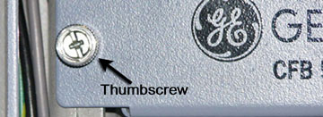

Operating Documentation
Direction 5670006, Rev# 1
Module Version 4.0, Version Date 8/19/08
Operating Documentation |
| ||||
| ELECTROCUTION HAZARD! | ||||
| HIGH VOLTAGE PRESENT | ||||
| USE PROPER LOCKOUT/TAGOUT PROCEDURES BEFORE REPLACING THE COMPONENTS. |
| Condition | Reference | Effectivity |
|---|---|---|
Perform OSHA Lockout Tagout Requirements | - | - |
Perform LOTO for XRFD Amplifier and PEN Cabinet (Magnet Room Electronics). | - | - |
Remove the front cables to the CFB (see Illustration 2).
| NOTE: | If you need better access to the CFB, unscrew the two
thumbscrews on the front of the CFB panel. Carefully slide the shelf
forward, being watchful of surrounding cords, to better conduct the
CFB replacement (see Illustration 3). Illustration 3: CFB Panel Thumbscrews  |
Using a ¼” wrench, remove the four screws that secure the protective cover (see Illustration 4).
Disconnect the fiber optic lines from connectors J1-J7 (see Illustration 5).
Carefully remove the CFB from the PEN Cabinet.
Connect the fiber optic lines from the RF Hub, Scan Room Interface (SRI) , and Physiological Acquisition Controller (PAC) boards to the CFB as indicated in Table 1(see Illustration 5). The latch on the fiber-optic connector connects facing up.
Connect cables to the front of the CFB (see Illustration 2).
Install protective cover (see Illustration 4).
Remove the LOTO tags from the system and restore all power.
Perform CFB Functional Diagnostics.